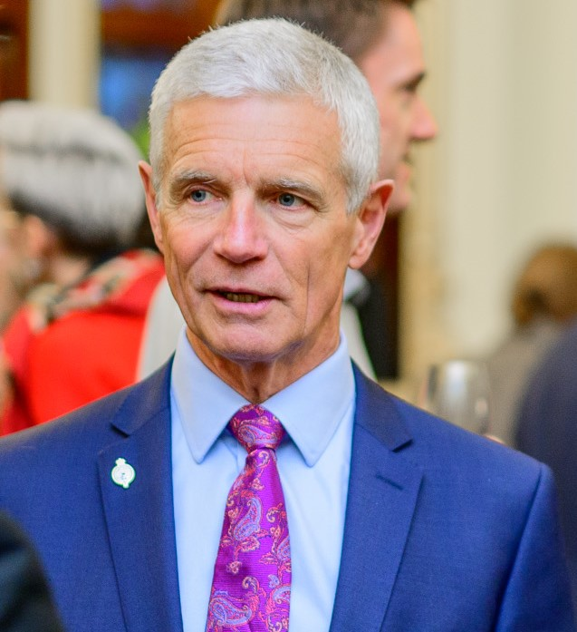

As Director of the Royal Geographical Society of South Australia (RGSSA) - an institution dedicated since 1885 to advancing geographical science and encouraging research and scholarship in geography - it is my genuine privilege to introduce this monumental project led by Dr Dany Bréelle: French Place Names Along the Australian Coastline. The toponyms bestowed by the d’Entrecasteaux (1791-1794) and Baudin (1800-1804) voyages.
Spanning more than a decade of rigorous scholarly inquiry, this initiative aligns perfectly with the RGSSA’s core mission to encourage geographical research, commemorate achievements of historical significance, and breathe life into our Society’s extensive archival heritage.
It is important to emphasise that this remarkable project must be understood not as a work of history, but as a masterclass in historical geography. While a historian may be primarily concerned with matters around when an event occurred and chronological chains of cause-and-effect, a historical geographer is more likely to ask where it occurred, why it happened there, and how that place’s attributes influenced - and were influenced by - the event. Through its sharp focus on French naming of the coastline, this project interrogates and reveals spatial manifestations of human culture, politics, and ambition.
By analysing 671 French toponyms - including 285 in South Australia alone - Dr Bréelle reveals how and why European ‘spaces of the mind’ were transposed onto places along the Australian shore. We see this in the stark spatial contrasts between d’Entrecasteaux’s crew-focused naming conventions, and the highly politicized, imperial nomenclature later instituted by François Péron and Louis Freycinet to mirror Napoleonic ambitions.
Through extensive historical-geographic research and the innovative use of ArcGIS StoryMaps, this project transforms these placenames from static map labels into fluid, multi-layered spatial narratives. It seamlessly connects Australian physical coordinates and landscape features with the volatile political, scientific, and cultural contexts of the French Revolution and the Napoleonic era.
For South Australia, this research holds profound significance. It preserves and interprets a dense layer of our coastal heritage where the imperial gaze of France directly intersected with the British charting missions of Captain Matthew Flinders.
By marrying meticulous archival scholarship with modern spatial technology, Dr Bréelle has built an invaluable cultural bridge. Her work provides geographers, historians, students, and local communities with an unprecedented framework to understand how the past is imprinted on our cultural landscape and how it continues to shape the contemporary geographic identities of our shores. The RGSSA is immensely proud to support this vital contribution to historical geography.